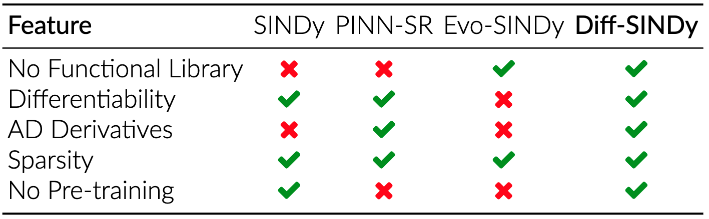
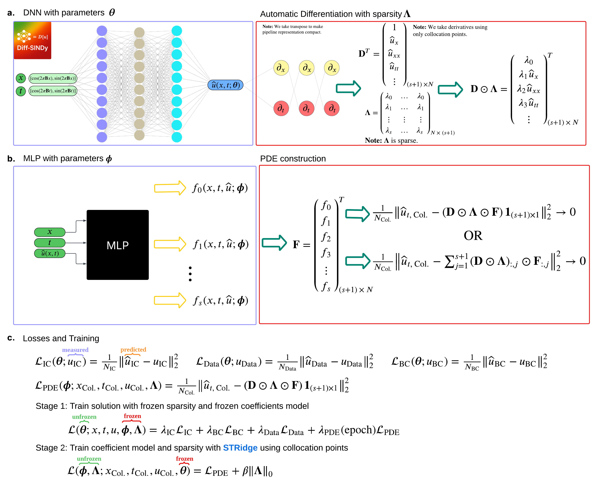

What is Diff-SINDy?
Diff-SINDy is a fully differentiable framework for discovering partial differential equations (PDEs) from data. Rather than constructing a large functional library, Diff-SINDy introduces a derivative library—a curated set of candidate temporal and spatial derivatives— reflecting the fact that most PDEs involve only a small number of derivatives of relatively modest order.
The method decouples the workflow into two complementary stages:
- Differentiable training, in which a neural network approximates the solution field and automatic differentiation (AD) is used to compute all necessary derivatives;
- Symbolic regression, in which the underlying PDE is identified using the evolutionary search algorithm implemented in PySR.
By leveraging AD instead of discrete estimators such as finite-difference schemes, Diff-SINDy obtains smooth and accurate derivative information. Parsimony is enforced through a SINDy-style sparsification strategy using Sequentially Thresholded Ridge Regression (STRidge). The overall approach requires no pretraining and enables end-to-end discovery of compact, interpretable PDEs.
Suppose you have an unknown—PDE:
$$ \begin{aligned} u_t = {} & f_0(x,t,u) + f_1(x,t,u)\,u_x + f_2(x,t,u)\,u_{xx} \\ & + f_3(x,t,u)\,u_{tt} + \dots + f_j(x,t,u)\,u_{xxx} + \dots \end{aligned} $$
or
$$ \begin{aligned} u_{tt} = {} & g_0(x,t,u) + g_1(x,t,u)\,u_x + g_2(x,t,u)\,u_t \\ & + g_3(x,t,u)\,u_{xx} + \dots + g_j(x,t,u)\,u_{xxx} + \dots \end{aligned} $$
The goal of Diff-SINDy is to learn symbolic expressions for the coefficient functions $f_i(x,t,u)$ or $g_i(x,t,u)$, producing a closed-form, parsimonious PDE that explains the data.
(a) The observed solution of the unknown—PDE is approximated using a deep neural network (DNN) defined on the spatiotemporal domain using random Gaussian sinusoidal features. Automatic differentiation (AD) is applied to this learned solution to construct a derivative library $\mathbf{D}$. Sparsity is introduced through a learnable binary mask represented by a matrix $\boldsymbol{\Lambda}$ whose continuous parameters are thresholded to 0 or 1 to indicate inactive and active derivatives.
(b) The PDE coefficients are approximated using a user-defined MLP architecture. Options include: a single MLP predicting all coefficients, a multi-task MLP with a shared backbone and separate heads, or one neural network per coefficient. This defines the coefficient library $\mathbf{F}$ at the collocation points.
(c) Training alternates between two stages:
- Stage 1 (Solution Network Training): Train the solution network using initial condition (IC), boundary condition (BC), and interior data losses with gradient balancing, while freezing both the sparsity mask and coefficient network. The PDE loss—constructed from the derivative library, coefficient library, and sparsity mask—is gradually introduced by increasing its weight $\lambda_{\rm PDE}$ from 0 to 1 over training.
- Stage 2 (Coefficient + Sparsity Optimization): Optimize the coefficient network and sparsity mask using the PDE loss, with sparsity enforced through Sequentially Thresholded Ridge Regression (STRidge) and an added regularization term.
These stages are alternated throughout training for stability. A warm-up phase (training the solution network without PDE loss at first) is recommended.